Loading PageLoading Page
Loading PageLoading Page
Making a nice looking page with SilverStripe is incredibly simple and beginner friendly. Since SilverStripe is designed for both content authors and web developers, making a beautiful website doesn't require extensive programming knowledge thanks to their easy-to-use interface.
When you first install SilverStripe, you will be redirected to your new website which will most likely look like this if you kept the default theme:
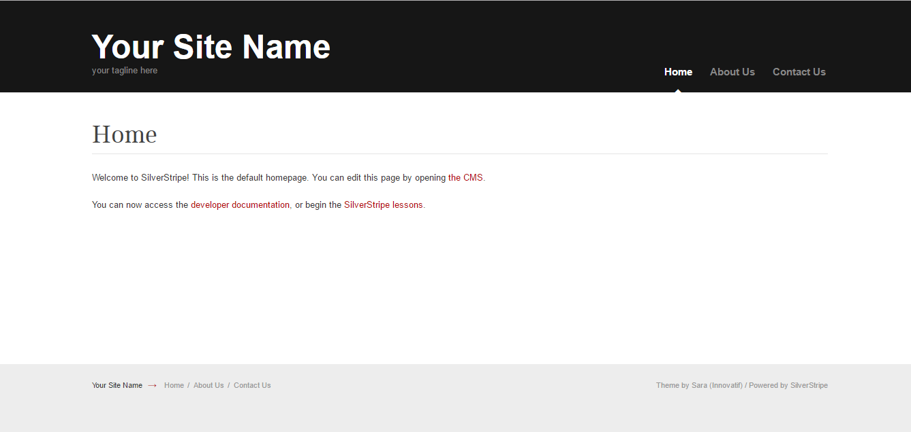
To begin, go to the SilverStripes admin page located at [Your URL]/admin and login using the email and password you gave during the installation. Once you're logged in you will redirected to the CMS User Interface.
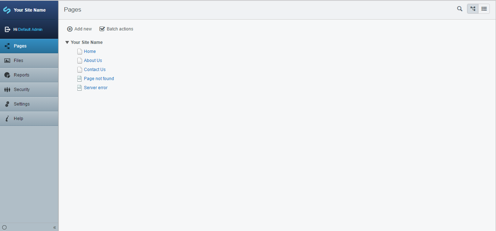
On the left side you'll see the navigation tabs, which lets you navigate through your website's pages, files, reports, settings and access their help page. As well if you click on one of the pages, you'll enter into their editor mode where you'll see the Tree Management area which allows you to choose which file to edit. On the right of the Tree Management area is the Page Maanagement which lets you edit the page content and page information. Below that is the Publishing Bar that lets you either save a draft of your edited page for later, or publish the changes to your site. Right next to that is the Mode Swicher that lets you switch between Preview Mode and Editing Mode.
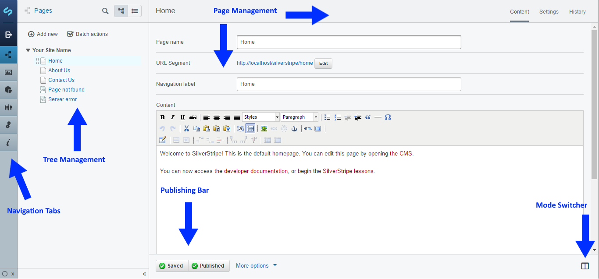
In order to add a new page just click on Add New in the Tree Management area, where you'll be taken to a prompt that asks you specify where to create the page and what kind of page to create. For this tutorial, we'll just select Top Level and Page and press Create.
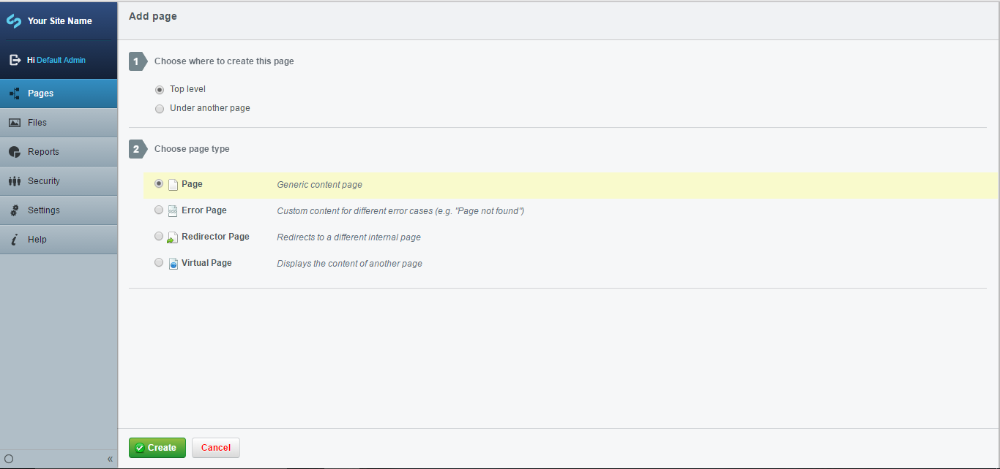
For this tutorial we're only going to be making a simple page, so we'll keep the title as New Page and in the content we'll just put: Hello World! Now just press "Save and Publish".
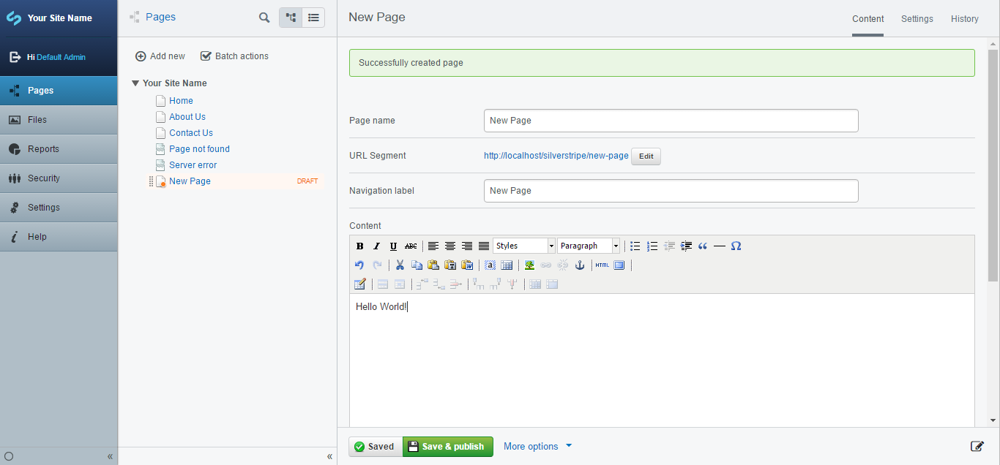
Now in order to view our newly published website we can just click the URL segment and we'll be taken to our page.
If you did everything correctly it should look like this:
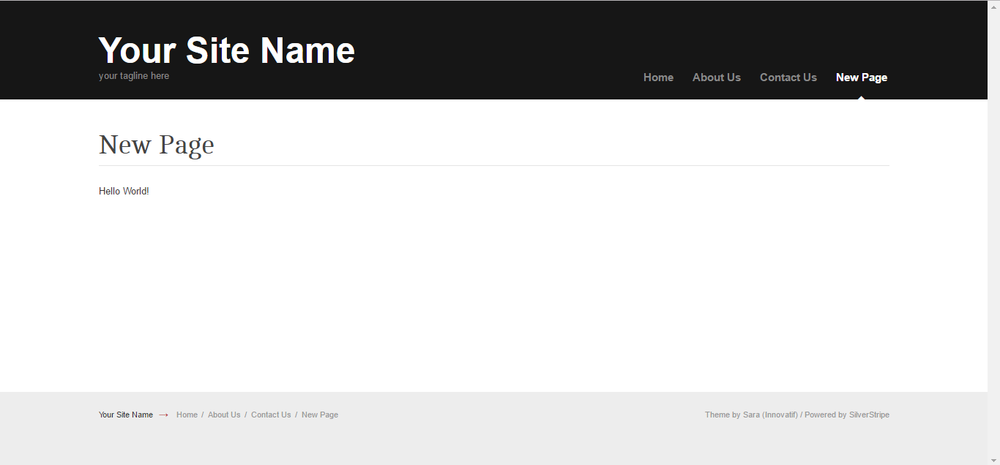
In order to add an image, we just have to go to the Files tab, navigate to our Uploads folder, click upload, and drag our desired image onto the page.
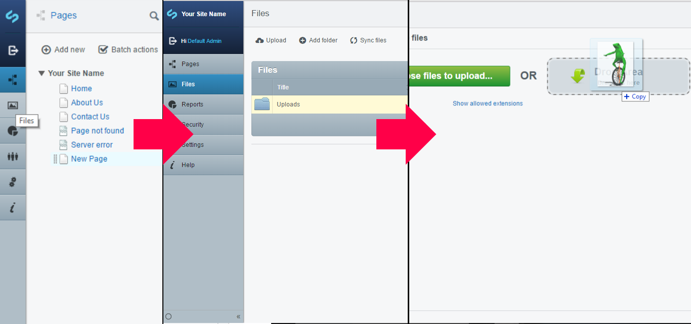
Navigate back to your New Page and click on Insert Media
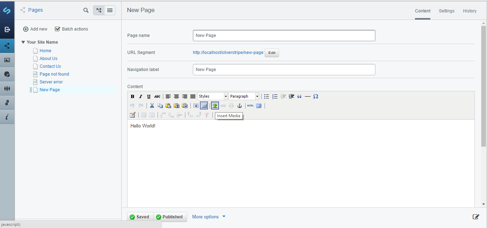
Then on the prompt, navigate to From the CMS and select the image. Click on insert and then Save and Publish your page.
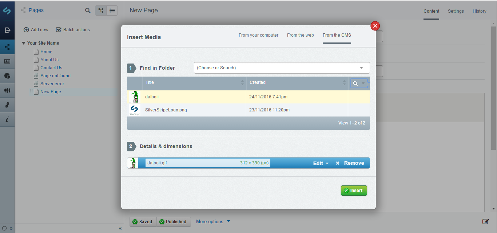
Now if you go to your page it should look something like this!
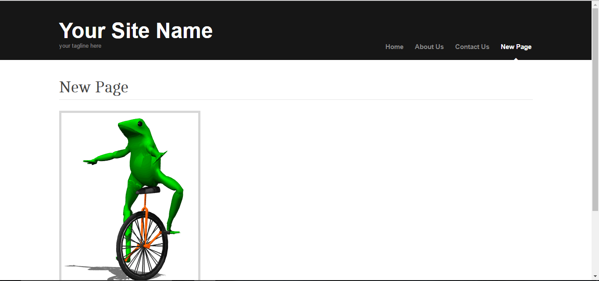
If you want to add a new theme, just go here and search for the theme you want. Once you've found a theme you like, download it from their GitHub repo and extract the files to the themes folder in your silverstripes folder. For example, I downloaded this theme and put it in my themes folder. Now if I want to change the theme, all I have to do is go to Settings, select the theme I want, and save.
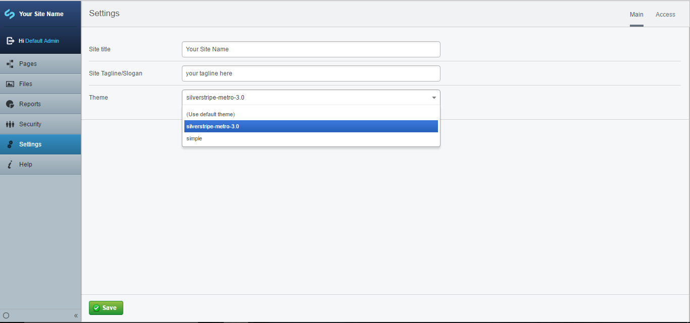
Now my page looks like this:
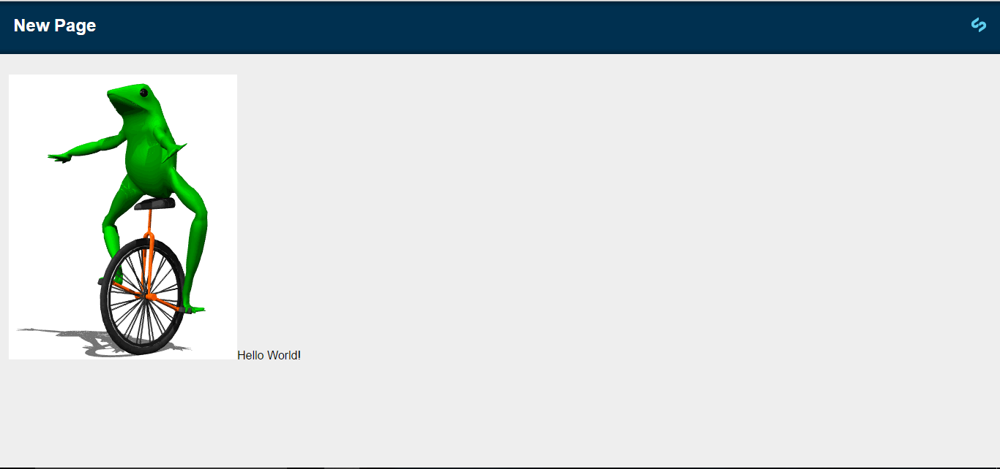
For more tutorials, go here.